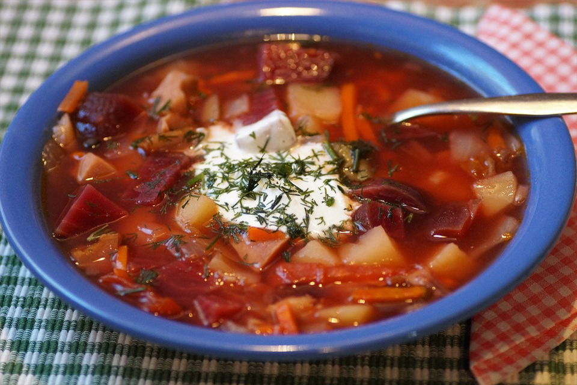

Borscht

Traditional Eastern European Borscht Soup Recipe
Borscht has a long history with many variations throughout Europe. This recipe was borrowed from natashaskitchen.com. Feel free to head over for more detail on this recipe's origin and background.
One of the great things about Borscht is it's high vitamin content. Many also love it's distinctive sour flavor. Give it a try...
Ingredients
- 3 medium beets, peeled and grated
- 4 Tbsp olive oil, divided
- 8 cups of chicken broth, + 2 cups of water
- 3 medium yukon potatoes, peeled and sliced into bite-size pieces
- 2 carrots, peeled and thinly sliced
Additional Flavorings
- 1 can of white cannelini beans with their juice
- 2 bay leaves
- 2-3 Tbsp of white white vinegar
- 1 tsp sea salt
- 1/4 tsp black pepper
- 1 large garlic clove
- 3 Tbsp of chipped dill
Instructions
- Peel, grate and/or slice all vegetables (keeping sliced potatoes in cold water to prevent browning until ready to use then drain).
- Heat a large soup pot (5 1/2 Qt or larger) over medium/high heat and add 2 Tbsp olive oil. Add grated beets and sauté 10 minutes, stirring occasionally until beets are softened.
- Add 8 cups broth and 2 cups water. Add sliced potatoes and sliced carrots then cook for 10-15 minutes or until easily pierced with a fork.
- While potatoes are cooking, place a large skillet over medium/high heat and add 2 Tbsp oil. Add chopped onion, celery and bell pepper. Saute stirring occasionally until softened and lightly golden (7-8 minutes). Add 4 Tbsp Ketchup and stir fry 30 seconds then transfer to the soup pot to continue cooking with the potatoes.
- When potatoes and carrots reach desired softness, add 1 can of beans with their juice, 2 bay leaves, 2-3 Tbsp white vinegar, 1 tsp salt, 1/4 tsp black pepper, 1 pressed garlic clove, and 3 Tbsp chopped dill. Simmer for an additional 2-3 minutes and add more salt and vinegar to taste.